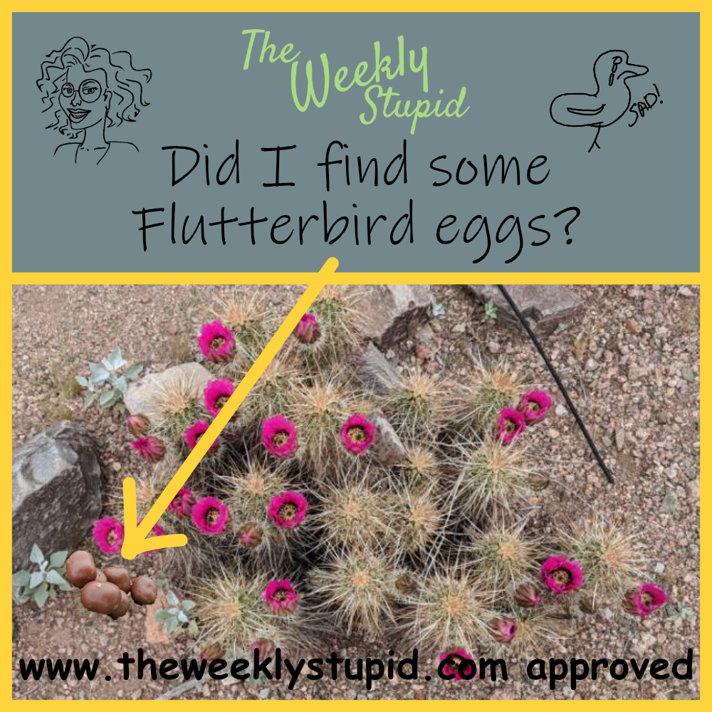

The Majestic and Beautiful Flutterbird
The Flutterbird may be the most important species the world currently inhabitates, yes inhabitates you idiot. Sorry for the scientific verbology, by species I obviously mean invertebrate. The current science shows the C02 levels and otomycosis are clearly related. If we can save the Flutterbird we will both increase and decrease the levels of C02 simultaneously. Therefore we will save, not only, the Flutterbird but also the majestic Javelina and the world as we know it. If not for the efforts of the great, wonderful, and most gregarious Dr. S Beakman where would we be? So, if you are still asking about the importance of the Flutterbird, you are as dumb as the idiot Ed Malloy.
Artist abstract rendition of the Elusive Flutterbird

This is an Elusive Flutterbird may be the most important species the world currently inhabitates, yes inhabitates you idiot. Sorry for the scientific verbology, by species I obviously mean invertebrate. The current science shows the C02 levels and otomycosis are clearly related. If we can save the Flutterbird we will both increase and decrease the levels of C02 simultaneously. Therefore we will save, not only, the Flutterbird but also the majestic Javelina and the world as we know it. If not for the efforts of the great, wonderful, and most gregarious Dr. S Beakman where would we be? So, if you are still asking about the importance of the Flutterbird, you are as dumb as the idiot Ed Malloy.
Rare Closeup of the Elusive Flutterbird
